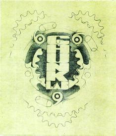

Those who wish to construct a mutant bicycle of their own are urged to learn from our mistakes. Much damage has been sustained in the course of these experiments.
Distributed for informational purposes only. Many effects of the wide-band chunkulation field are unknown and potentially harmful. Even if a vehicle of the type outlined in these pages does not break (and they all do, eventually), it will still produce extreme adverse effects in its rider, including but not limited to "chopper crotch", the bends, scrapie, and devolution. You have been warned.
The specifics of creation are here outlined for Chunk forks, tall bicycles, and trikes. There is also a more general article on bicycle handling, especially trail. Practical advice on crowd control measures, naming a steed, gear, and relationships are also given. Clearance has just been given for a tour of our secret laboratory, where some of our works in progress can be found.
| Copyright 2003 Megulon Five <megulon5@dclxvi.org>. |
|
This work is licensed under a Creative Commons License. | Last modified 12 September 1999. |